In August 2011, these 10 individuals were among the most powerful people in the world.
You may not have heard any of these names before. It is certainly unlikely that you have heard of more than one or two of these individuals. Yet they decide how easy or difficult it will be for you to get a job when you graduate. They decide how expensive it is for you to buy a car. They decide how many pesos you get for a dollar if you travel from the United States to Mexico. They decide if the Dow Jones Industrial Average is going to increase or decrease. They decide whether the stock markets in Tokyo, London, Hong Kong, and Frankfurt are going to increase or decrease. They decide the cost of your vacation abroad and the cost of the clothes that you buy at home.
So who are they?
They are the members of a group called the Federal Open Market Committee (FOMC). They are responsible for setting monetary policy in the United States. Of course, they do not literally decide all the things we just mentioned, but their decisions do have a major influence on everything we listed. This chapter is about what these people do and why their choices matter so much for our day-to-day life. We begin with an example of this group at work.
FOMC Policy Announcement: February 2, 2005
For immediate release
The Federal Open Market Committee decided today to raise its target for the federal funds rate by 25 basis points to 2-1/2 percent.
The Committee believes that, even after this action, the stance of monetary policy remains accommodative and, coupled with robust underlying growth in productivity, is providing ongoing support to economic activity. Output appears to be growing at a moderate pace despite the rise in energy prices, and labor market conditions continue to improve gradually. Inflation and longer-term inflation expectations remain well contained.
The Committee perceives the upside and downside risks to the attainment of both sustainable growth and price stability for the next few quarters to be roughly equal. With underlying inflation expected to be relatively low, the Committee believes that policy accommodation can be removed at a pace that is likely to be measured. Nonetheless, the Committee will respond to changes in economic prospects as needed to fulfill its obligation to maintain price stability.
Voting for the FOMC monetary policy action were: Alan Greenspan, Chairman; Timothy F. Geithner, Vice Chairman; Ben S. Bernanke; Susan S. Bies; Roger W. Ferguson, Jr.; Edward M. Gramlich; Jack Guynn; Donald L. Kohn; Michael H. Moskow; Mark W. Olson; Anthony M. Santomero; and Gary H. Stern.
In a related action, the Board of Governors unanimously approved a 25-basis-point increase in the discount rate to 3-1/2 percent. In taking this action, the Board approved the requests submitted by the Boards of Directors of the Federal Reserve Banks of Boston, New York, Philadelphia, Cleveland, Richmond, Atlanta, Chicago, St. Louis, Minneapolis, Kansas City, Dallas, and San Francisco.Federal Open Market Committee, “Press Release,” Federal Reserve, February 2, 2005, accessed July 20, 2011, http://www.federalreserve.gov/boarddocs/press/monetary/2005/20050202/default.htm.
This FOMC statement is from February 2005. We have deliberately chosen a statement from a few years ago because we want to begin with monetary policy prior to the economic crisis that began in 2008. This policy statement contains all the essential elements of monetary policy in normal times.
The 12 people listed in the second-to-last paragraph of this announcement were the FOMC members in February 2005. (These names are different from those we named at the start of the chapter because the composition of the FOMC changes over time.) The president of the United States was not one of them. And none of them are members of Congress. You did not vote for any of them. None of the three main branches of the US government (executive, legislative, or judicial) is involved in the setting of US monetary policy. The FOMC is part of a government body called the US Federal Reserve Bank, commonly known as the Fed. The Fed is independent: decisions made by the Fed do not have to be approved by other branches of the government.
In this statement we find the following phrases:
The first phrase indicates an action undertaken by the Fed: it changed its “target” for something called the “federal funds rate.” This is a particular interest rate related to the rate banks pay each other for loans. Although you will never borrow to buy a car or a house at this rate, the interest rates you confront are heavily influenced by the federal funds rate. For example, over the past few years, the federal funds rate has decreased from 5.25 percent in 2006 to a value of 0.25 percent at the time of writing (mid-2011). Over this same period of time, rates on other types of loans, including mortgages and car loans, decreased as well. For example, typical car loan rates were about 7–8 percent in 2006 and about 3–4 percent in mid-2011. In this way, the actions of the Fed affect all of us.
The second phrase contains the FOMC’s assessment of the state of the economy, expressed in terms of two goals: economic growth and the stability of prices. The Fed is charged with the joint responsibility of stabilizing prices and ensuring the full employment of economic resources. The final statement details another action with respect to a different interest rate, called the discount rate.
The FOMC issues statements such as this on a regular basis. Our goal in this chapter is to equip you with the knowledge to understand these statements, which will in turn help you make sense of the discussions of the Fed’s actions on television or in the newspapers. We want to answer the following questions:
What does the Federal Reserve do? And why are its actions so important?
The FOMC statement reveals that, to understand the Fed, we need to know both the goals and the tools of the Fed. From the statement, we learn that the goals of the Fed are sustainable growth and stable prices. The Fed cannot do much to affect the long-run growth rate of the economy, but it can and does try to keep the economy close to potential output. At the same time, it tries to ensure that the overall price level does not change very much—in other words, it tries to keep inflation low. The Fed pursues these goals by means of several tools that it has at its disposal. The FOMC statement informs us that these tools include two different interest rates.
We begin with a little bit of background information. We briefly explain what the Federal Reserve does, and we note that other monetary authorities are similar, although not identical, in terms of goals and behavior. Because we have seen that the Fed’s actions frequently revolve around interest rates, we make sure that we know exactly what an interest rate is.
We then get to the meat of the chapter, which discusses the workings of monetary policy. We explain how the Fed uses its tools to affect the things it ultimately cares about. Broadly speaking, we can summarize the cyclic behavior of the Fed as follows:
There is a long chain of connections between the Fed’s tools and the ultimate state of the economy. To make sense of what the Fed does, we follow these connections, step by step. As we do so, we create a framework for understanding the effects of monetary policy, called the monetary transmission mechanism. We must also look at the connection in the other direction: how does the state of the economy influence the Fed’s decisions? Figure 25.1 "The Links between Monetary Policy and the State of the Economy", which we use as a template for the chapter, summarizes the interaction between the monetary transmission mechanism and the behavior of the Fed. We conclude the chapter by looking at the tools of the Fed in more detail and by discussing some historical episodes through the lens of monetary policy.
Figure 25.1 The Links between Monetary Policy and the State of the Economy

The Federal Reserve looks at current economic conditions and decides on a policy response. This policy affects the state of the economy. The Fed then observes the new economic conditions and decides on a new policy response, and so forth.
After you have read this section, you should be able to answer the following questions:
We start our discussion with institutions.
The Federal Reserve System was formally established in an act of Congress on December 23, 1913, called the Federal Reserve Act (http://www.federalreserve.gov/aboutthefed/fract.htm). The stated purpose of the act was as follows: “To provide for the establishment of Federal reserve banks, to furnish an elastic currency, to afford means of rediscounting commercial paper, to establish a more effective supervision of banking in the United States, and for other purposes.”The Federal Reserve Act is found at “Federal Reserve Act,” Board of Governors of the Federal Reserve System, accessed September 20, 2011, http://www.federalreserve.gov/aboutthefed/fract.htm, and the structure of the Federal Reserve System is presented at “The Structure of the Federal Reserve System,” The Federal Reserve Board, accessed September 20, 2011, http://www.federalreserve.gov/pubs/frseries/frseri.htm. The Federal Reserve System is built around a 7-member Board of Governors together with 12 regional banks. The members of the board are appointed by the president and approved by Congress to serve for 14 years. The FOMC, which is instrumental in the conduct of monetary policy, has 12 members.
Although the president and Congress play a role in the appointment of members of the Fed, their direct control stops there. The Fed is an independent body. The executive and congressional branches of the government have no formal input into the determination of monetary policy. Congressional control is limited to the fact that the chair of the Fed is required to report to Congress periodically and to Congress eventually having the power to change the laws governing the Fed’s conduct.
The goals of the Fed are specified in the section of the Federal Reserve Act titled “Monetary Policy Objectives”: “The Board of Governors of the Federal Reserve System and the Federal Open Market Committee shall maintain long run growth of the monetary and credit aggregates commensurate with the economy’s long run potential to increase production, so as to promote effectively the goals of maximum employment, stable prices, and moderate long-term interest rates.”“Federal Reserve Act: Monetary Policy Objectives,” Federal Reserve, December 27, 2000, accessed August 6, 2011, http://www.federalreserve.gov/aboutthefed/section2a.htm. These objectives provide guidance to the Fed: it is required to pay attention to the level of economic activity (“maximum employment”) and to the level of inflation (“stable prices”). Exactly how the Fed promotes these goals—and chooses among them if necessary—is not specified. In some cases, the different aims of the Fed may conflict. For example, promoting employment may not be consistent with low inflation. The February 2, 2005, statement explicitly notes the balance between these goals.
The Fed has three main ways of affecting what goes on in the economy. The first was alluded to, although not mentioned by name, in the February 2, 2005, policy announcement. It is called open-market operations and represents the main way that the Fed influences interest rates. A second tool—the discount rate—was mentioned explicitly in the policy announcement. The third tool—reserve requirements—was not mentioned on February 2, 2005, but is nonetheless an important weapon in the Fed’s arsenal. Later on in this chapter, we examine the tools of the Fed in detail. For the moment, it is enough to know that the Fed affects the economy through changes in interest rates.
Our discussion in this chapter applies to not only the United States but also other countries. Wherever there is a currency, there is a monetary authority—a central bank—charged with the control of that currency. For example, in Europe, the European Central Bank (ECB; http://www.ecb.int/home/html/index.en.html) dictates monetary policy for all those countries that use the euro. In Australia, the Reserve Bank of Australia (RBA; http://www.rba.gov.au) manages monetary policy.
Different central banks do not all function in exactly the same way. To illustrate, here are policy announcements from the Bank of England (BOE; http://www.bankofengland.co.uk/publications/news/2006/078.htm), the Central Bank of Egypt (CBE; http://www.cbe.org.eg/public/PRESS_Release_For_Monetary_Policy/2011/MPC_PressRelease_09_06_2011_E.pdf), and the RBA (http://www.rba.gov.au/media-releases/2011/mr-11-09.html). The details of the announcements are not critical. However, all have a “Monetary Policy Committee” rather than an FOMC. The different banks target slightly different interest rates: the BOE targets the “Bank rate paid on commercial bank reserves”; the CBE refers to overnight deposit and lending rates, the “7-day repo,” and the discount rate; and the RBA refers to the “cash rate.” You do not need to worry about exactly what these different rates are. All three banks are looking at the overall state of the economy, in terms of both output and inflation, and are setting interest rates to pursue broadly similar goals.
The Bank of England’s Monetary Policy Committee today voted to raise the official Bank rate paid on commercial bank reserves by 0.25 percentage points to 4.75 percent.
The pace of economic activity has quickened in the past few months…As a result, over the past few quarters GDP [gross domestic product] growth has been at, or a little above, its long-run average and business surveys point to continued firm growth.…
CPI [Consumer Price Index] inflation picked up to 2.5 percent in June, and is expected to remain above the 2.0 percent target for some while. Higher energy prices have led to greater inflationary pressures, notwithstanding muted earnings growth and a squeeze on profit margins.…
Against the background of firm growth, limited spare capacity, rapid growth of broad money and credit, and with inflation likely to remain above the target for some while, the Committee judged that an increase of 0.25 percentage points in the official Bank rate to 4.75 percent was necessary to bring CPI inflation back to the target in the medium term.
In its meeting held on June 9, 2011, the Monetary Policy Committee (MPC) decided to keep the overnight deposit and lending rate unchanged at 8.25 and 9.75 percent, respectively, and the 7-day repo at 9.25 percent. The discount rate was also kept unchanged at 8.5 percent.
Headline CPI increased by 0.20 percent in May [month to month] following the 1.21 percent in April, bringing the annual rate down to 11.79 percent from 12.07 percent registered in April. …
Meanwhile, real GDP contracted by 4.2 percent in 2010/2011 Q3 which marks the first negative year-on-year growth since the release of quarterly data in 2001/2002. …
Against the above background, the slowdown in economic growth should limit upside risks to the inflation outlook. Given the balance of risks on the inflation and GDP outlooks and the increased uncertainty at this juncture, the MPC judges that the current key CBE [Central Bank of Egypt] rates are appropriate.
At its meeting today, the Board decided to leave the cash rate unchanged at 4.75 per cent.
The global economy is continuing its expansion, led by very strong growth in the Asian region, though the recent disaster in Japan is having a major impact on Japanese production, and significant effects on production of some manufactured products further afield. Commodity prices have generally softened a little of late, but they remain at very high levels, which is weighing on income and demand in major countries and also pushing up measures of consumer price inflation. …
Growth in employment has moderated over recent months and the unemployment rate has been little changed, near 5 per cent. Most leading indicators suggest that this slower pace of employment growth is likely to continue in the near term…
CPI inflation has risen over the past year, reflecting the effects of extreme weather and rises in utilities prices, with lower prices for traded goods providing some offset. The weather-affected prices should fall back later in the year, though substantial rises in utilities prices are still occurring. The Bank expects that, as the temporary price shocks dissipate over the coming quarters, CPI inflation will be close to target over the next 12 months.
At today’s meeting, the Board judged that the current mildly restrictive stance of monetary policy remained appropriate. In future meetings, the Board will continue to assess carefully the evolving outlook for growth and inflation.
In this chapter, we talk, for the most part, about the Federal Reserve. We focus on the United States principally because we do not want to get too bogged down in learning the different languages used by different central banks. From looking at the statements of the Fed, the BOE, the CBE, and the RBA, we see that the terminology of monetary policy varies greatly from country to country, the names of the key interest rates differ, and so forth. The underlying principles of monetary policy are largely the same in all countries, however.
After you have read this section, you should be able to answer the following questions:
The actions of monetary authorities, such as the Fed and other central banks around the world, influence interest rates and thus the levels of employment, output, and prices. The links between a central bank’s actions and overall economic performance are far from straightforward, however. The process is summarized by the monetary transmission mechanismA mechanism explaining how the actions of a central bank affect aggregate economic variables, in particular real GDP. (shown in Figure 25.2 "The Monetary Transmission Mechanism"), which is the heart of this chapter. The monetary transmission mechanism is more than just some theory that economists have devised to try to make sense of monetary policy. It summarizes how the Fed thinks about its own actions.
Figure 25.2 The Monetary Transmission Mechanism
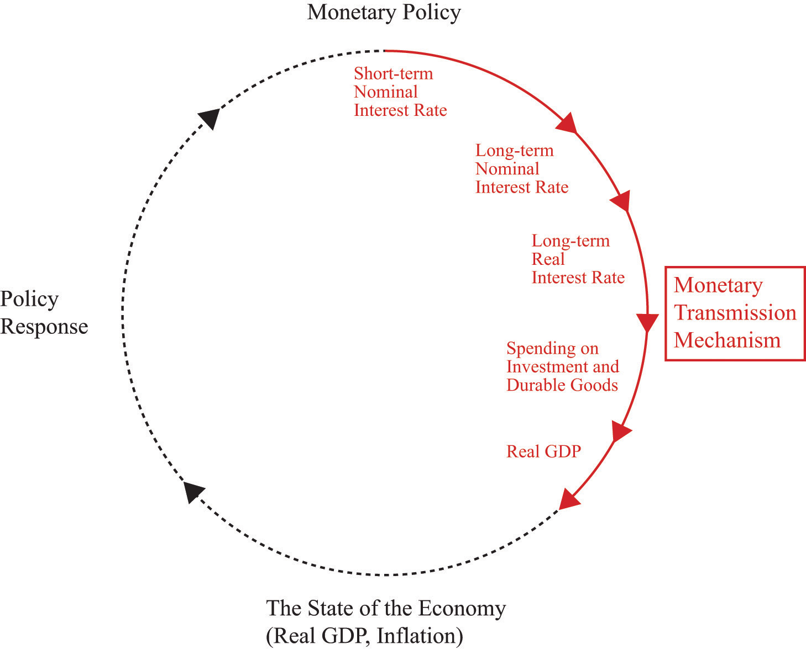The Fed targets a short-term nominal interest rate. Changes in this rate lead to changes in long-term real interest rates, which affect spending on investment and durable goods, ultimately leading to a change in real GDP.
The monetary transmission mechanism explains how the actions of the Federal Reserve Bank affect aggregate economic variables, and in particular real gross domestic product (real GDP). More specifically, it shows how changes in the Federal Reserve’s target interest rate affect different interest rates in the economy and thus influence spending in the economy. Through open-market operations, the Fed targets a short-term nominal interest rateThe number of additional dollars that must be repaid for every dollar that is borrowed.. Changes in that interest rate in turn affect long-term nominal interest rates. Changes in long-term nominal rates lead to changes in long-term real interest ratesThe rate of return specified in terms of goods, not money.. Changes in long-term real interest rates affect investmentThe purchase of new goods that increase capital stock, allowing an economy to produce more output in the future. and durable goodsGoods that last over many uses. spending. Finally, changes in spending affect real GDP. We will examine every step of this process.
This chapter focuses on the effects of Fed actions, but essentially the same analysis applies to the study of monetary policy in other countries. The channels of influence are to a large degree independent of which country we study, although the magnitudes of the policy effects might differ across countries. Monetary policy differs across countries more through the targets set by different central banks than through the transmission mechanism.
On February 2, 2005, the Federal Open Market Committee (FOMC) decided to increase the target federal funds rate to 2.5 percent. The word target is critical here. If you listen to television news, you might get the impression that the Fed sets interest rates. It does not. It influences them, with greater or lesser success at different times.
Figure 25.3 "Target and Actual Federal Funds Rate, 1971–2005" shows the monthly target and actual federal funds rate between 1971 and 2008. From this picture, it is evident that the target and actual federal funds rates move together. We can conclude that the first stage of the monetary transmission mechanism is reliable. The Fed can influence the federal funds rate. So far so good—at least for this period of time. As we shall see later, when we consider more recent events, the Fed was much less successful in targeting the federal funds rate during the periods of financial distress in 2007 and 2008.
Figure 25.3 Target and Actual Federal Funds Rate, 1971–2005
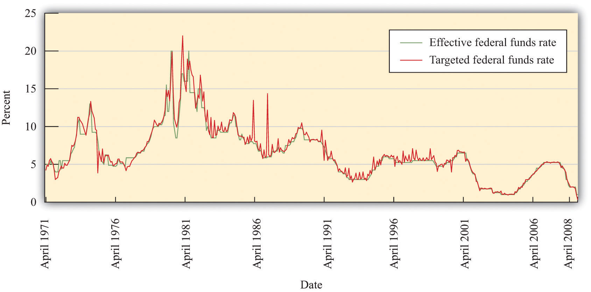The target and actual federal funds rates move closely together.
The next question is, do movements in the federal funds rate lead to corresponding movements in long-term interest rates? By “long-term,” we mean the rates on assets that have a maturity of at least 1 year and, in particular, assets that have a maturity of 5 years, 10 years, or even longer. ArbitrageThe act of buying and then selling an asset to take advantage of profit opportunities. among different assets means that annual interest rates on assets with different maturitiesThe term in which an asset comes due. are linked. As a result, the actions of the Fed to influence short-term rates also affect long-term rates.
Figure 25.4 "Short-Term and Long-Term Interest Rates" shows the relationship between the federal funds rate and longer-term interest rates. Broadly speaking, these long rates move with the federal funds rate. But it is also clear that the longer the horizon on the debt, the less responsive is the interest rate to movements in the federal funds rate.
This is one of the difficulties faced by the Fed: it can target short-term rates very accurately, but its influence on long-term rates is much less precise. Since—as we shall see—many economic decisions depend on long-term rates, the Fed’s ability to influence the economy is imperfect. Some writers have suggested that the Fed is an all-powerful organization that can move the economy around on a whim. There is no doubt that the Fed wields a great deal of power over the economy. Nevertheless, the Fed’s influence is substantially limited by the fact that it cannot control long-term interest rates with anything like the same precision that it brings to bear on the federal funds rate.
Figure 25.4 Short-Term and Long-Term Interest Rates
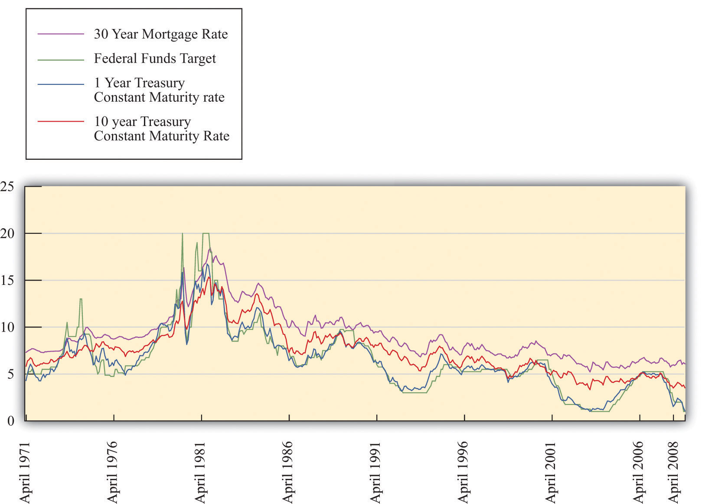The Fed’s ability to influence long interest rates is much more limited than its ability to affect short rates.
So far in this section, we have been considering nominal interest rates, but we know that the decisions of firms and households are based on real interest rates. The link between nominal and real interest rates is given by the Fisher equation:
real interest rate ≈ nominal interest rate − inflation rate.To use this relationship, we simply subtract the inflation rate from the nominal interest rate. So if the nominal interest rate were 15 percent, as it was in the early 1980s, and the inflation rate were 12 percent, then the real interest rate would be 3 percent. But if the inflation rate were higher—say, 18 percent—then the real interest rate would be minus 3 percent.
Toolkit: Section 31.25 "The Fisher Equation: Nominal and Real Interest Rates"
The toolkit reviews the derivation of the Fisher equation.
Figure 25.5 "Real and Nominal Interest Rates" shows the nominal and real rates of return for a one-year Treasury bond. Because inflation is positive, the nominal interest rate exceeds the real rate. The figure shows that the nominal and real rates typically move closely together. In the early 1980s, for example, the real interest rate was negative. Presumably when households lent money in the early 1980s, they did not expect a negative return on their saving but instead expected that the nominal interest rate would exceed the inflation rate. From that perspective, the negative real interest rate is a consequence of higher than anticipated inflation.
The Fed’s ability to influence longer-term nominal rates through its influence on the federal funds rate apparently extends to the real interest rate as well. The connection is not perfect, however. On some occasions, movements in nominal rates are decoupled from movements in real rates.
Figure 25.5 Real and Nominal Interest Rates
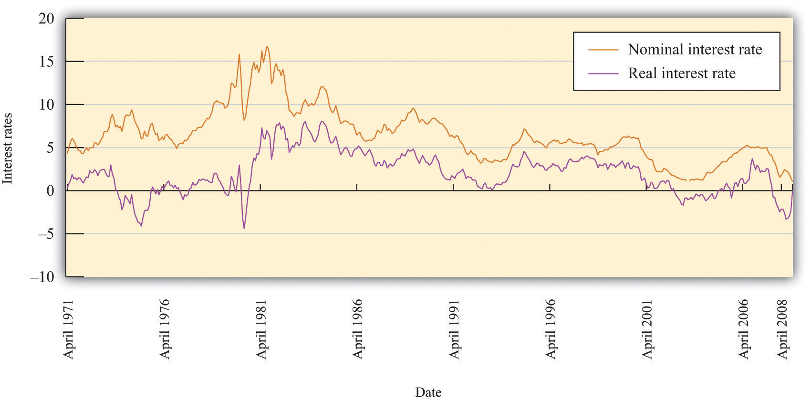Changes in nominal interest rates generally lead to changes in real interest rates, but the link between the two is imperfect.
Real rates of interest influence spending by both households and firms. The main categories of purchases that are affected by interest rates are as follows:
What do these have in common? In each case, the purchase yields a flow of benefits that extends over some significant period of time. If a firm builds a new factory or purchases a new piece of machinery, it typically expects to be able to use that plant and equipment for years or decades. When a household buys a new home, it expects either to live there for a long time or else to sell it to someone else who can live there. If you buy a durable good such as a new car or a refrigerator, you expect to obtain the benefits of that purchase for several years.
Figure 25.6 "Real Interest Rates and Spending on Durable Goods" shows the relationship between the real interest rate and spending on durable goods. The higher the real interest rate is, the lower is the amount of spending on durable goods. Of course, the relationship need not be a straight line; we have just drawn it this way for simplicity. As you might imagine, monetary policymakers are very interested in the exact form of this relationship. They want to know exactly how big a change in durable goods spending is likely to follow from a given change in interest rates.
Figure 25.6 Real Interest Rates and Spending on Durable Goods
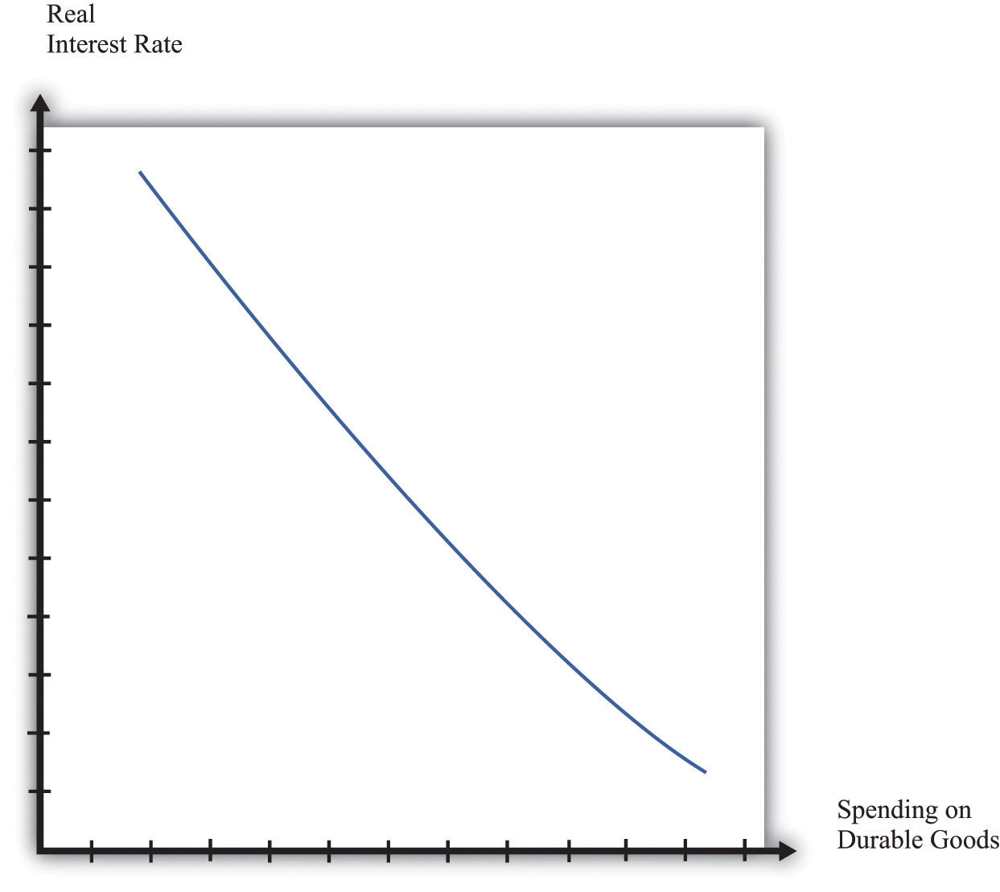At higher interest rates, firms are less likely to borrow for investment projects, and households are less likely to borrow to purchase housing and durable goods such as new cars. Thus spending on durable goods is lower at higher interest rates and vice versa.
To understand in more detail why interest rates affect spending on durable goods, consider the purchase of a machine by a firm. Firms carry out such investment spending because they expect the machine to yield a flow of profits not only in the present but also for several years into the future. A machine is a capital good; it is used in the production of other goods and is not used up during the production process. The fact that the returns from the machine accrue over several years is what we mean by the term durable.
It is not correct to simply add profit flows in different years because a dollar today is usually worth more than a dollar next year. Why? If you take a dollar today and put it in a savings account at the bank, you will get your dollar plus interest back next year. If the interest rate is 10 percent, then $1 this year is worth $1.10 next year. Turning it around, $1 next year is worth only about 91 cents this year (because 1/1.1 = 0.91).
The technique for adding together flows of resources in different periods is called discounted present value. To work out whether a given investment is profitable, a firm must calculate the value, in today’s terms, of the flows of profits that it expects to receive. It then compares this to the cost of the investment. If the discounted present value of the profits exceeds the cost, the firm will undertake the investment.
Toolkit: Section 31.5 "Discounted Present Value"
You can review discounted present value in the toolkit.
Table 25.1 "Return on Investment" illustrates a simple investment decision. In year 1, you pay for a machine, and it yields some profit in that year. The next year, the machine yields further profit. Suppose you, as a manager of a firm, must decide whether or not to buy this machine. How do you make this decision? In the first year, you pay $970 for the machine and earn only $500 back, so you are down $470. In the second year, you will earn an additional $500—but you have to wait a year to get this money. Think of the profits in year 2 as being in real terms—that is, already corrected for inflation.
Table 25.1 Return on Investment
| Year | Payment for Machine | Real Profit from Machine |
|---|---|---|
| 1 | 970 | 500 |
| 2 | 0 | 500 |
To decide about the purchase of the machine, you need to know the interest rate. If the interest rate were zero, the calculation would be easy. You could just add together the profit flows in the 2 years, observe that $1,000 is more than the $970 that you have to pay for the machine, and conclude that the purchase is a good idea. Now suppose the real interest rate is 5 percent, which means that the real interest factor is 1.05. Then the discounted present value of the profit flows from the machine is given by the following equation:
In this case, the purchase is still a good idea. You will earn $976 in present value terms, exceeding the $970 that you have to pay, so you still come out ahead.
But what if that the real interest rate is 10 percent? In this case,
This is less than the amount that you had to pay for the machine. The investment no longer looks like a good idea. The higher the interest rate, the more we must discount future earnings, so the less likely it is that a current investment will be profitable.
In most real-life cases, the flow of profits extends for several years, so the discounted present value calculation is somewhat harder. (Still, even harder calculations can be done easily with a calculator or a spreadsheet.) Our example may be simple, but it illustrates our key point. As the real interest rate decreases, the discounted present value of profits from a machine increases. In the economy, there are at any given time many possible investment opportunities. Some have higher profit flows than others. At lower interest rates, more machines will be profitable to purchase: investment increases as the real interest rate decreases.
Households purchase homes and durable consumption goods, such as cars and household appliances. If the household borrows to make such purchases (through mortgages, car loans, or other personal loans), then exactly the same logic applies. Higher interest rates will tend to deter the household from these purchases, whereas lower interest rates will encourage purchases.Even if the household uses its own accumulated saving to buy the durable good, there is an opportunity cost of using these funds: it could have put the money in the bank instead. The higher the real interest rate, the better it looks to put money in the bank. Households usually have some choice about when exactly to purchase such goods. If interest rates are high this year, it probably makes sense to put off that purchase of a new washing machine until next year, when rates might be lower.
The effect of an increase in the real interest rate on spending on durable goods is captured in Figure 25.7 "The Relationship between the Real Interest Rate and Spending on Durable Goods".
Figure 25.7 The Relationship between the Real Interest Rate and Spending on Durable Goods
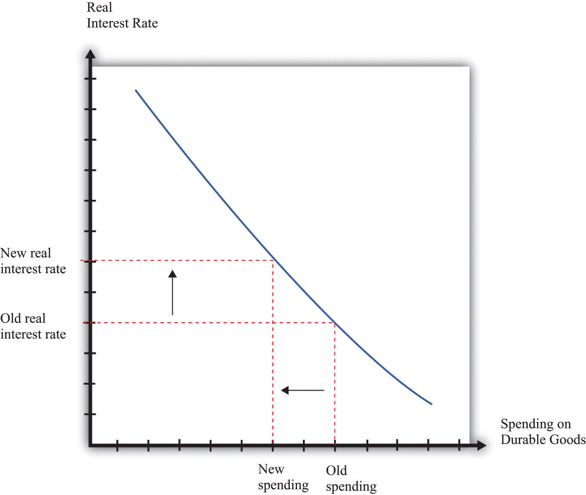When the real interest rate increases, spending on durable goods decreases.
Look again at Figure 25.2 "The Monetary Transmission Mechanism". We have so far explored the links from the Fed’s decision on a target to spending on durable goods and net exports. Now we examine how changes in spending affect total output in the economy.
The aggregate expenditure model allows us to see how changes in aggregate spending translate into changes in GDP, at a given price level. The idea underlying the aggregate expenditure model is that, by the rules of national income accounting, real GDP must equal both production and spending. If spending increases, then it must be the case that production increases as well. The key diagram of the aggregate expenditure model is shown in Figure 25.8 "Aggregate Spending Depends Positively on Income".
Variations in the real interest rate influence the level of aggregate spending through the level of autonomous spending (the intercept term). To see why, recall that total spending is the sum of consumption, investment, government purchases, and net exports. The intercept term of the expenditure relationship includes all the influences on spending other than output. Thus any changes in consumption, investment, or net exports that are not induced by changes in output show up as changes in the intercept term. In particular, if an increase in interest rates causes firms to cut back on their investment spending, then the planned spending line shifts downward.
Figure 25.8 Aggregate Spending Depends Positively on Income
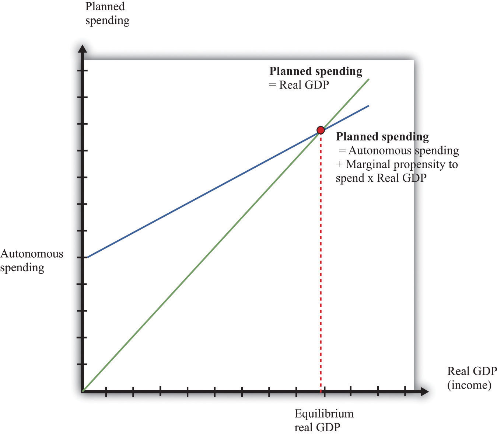The economy is in equilibrium when spending equals real GDP.
We saw in Figure 25.7 "The Relationship between the Real Interest Rate and Spending on Durable Goods" that, as the real interest rate increases, the level of spending on durables decreases. This leads to a decrease in spending, given the level of income, and thus a decrease in the intercept of the spending line, as shown in Figure 25.9 "Increases in Real Interest Rates Reduce Real GDP". The magnitude of the reduction in spending—that is, the shift downward in the spending line—will depend on the sensitivity of durable spending to real interest rates. The more sensitive durable spending is to changes in the real interest rate, the larger the shift in the spending line will be when the real interest rate changes.
Figure 25.9 Increases in Real Interest Rates Reduce Real GDP
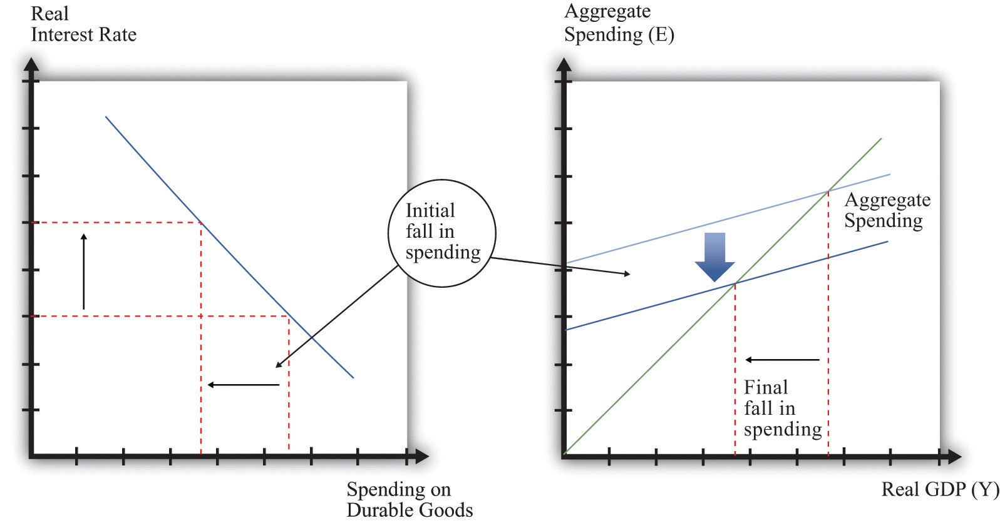As a consequence of increases in real interest rates, aggregate spending decreases.
The initial reduction in spending induced by the increased real interest rate is then magnified by the multiplier process. The reduction in durable spending leads to a contraction in output. The resulting decrease in income leads households to spend less, leading to further contractions in output and income. In the end, the overall reduction in output exceeds the initial reduction in spending. This is visible in Figure 25.9 "Increases in Real Interest Rates Reduce Real GDP" from the fact that the horizontal difference between the old and new equilibrium points is larger than the vertical shift in the spending line.
Toolkit: Section 31.30 "The Aggregate Expenditure Model"
You can review the aggregate expenditure model and the multiplier in the toolkit.
We can summarize much of the monetary transmission mechanism by means of a relationship between real interest rates and real GDP, as shown in Figure 25.10 "The Relationship between the Real Interest Rate and Real GDP". After we work through all the connections from real interest rates to the various components of spending and real GDP, we find that there is a level of real GDP associated with each real interest rate. The higher the interest rate, the lower is real GDP.
Figure 25.10 The Relationship between the Real Interest Rate and Real GDP
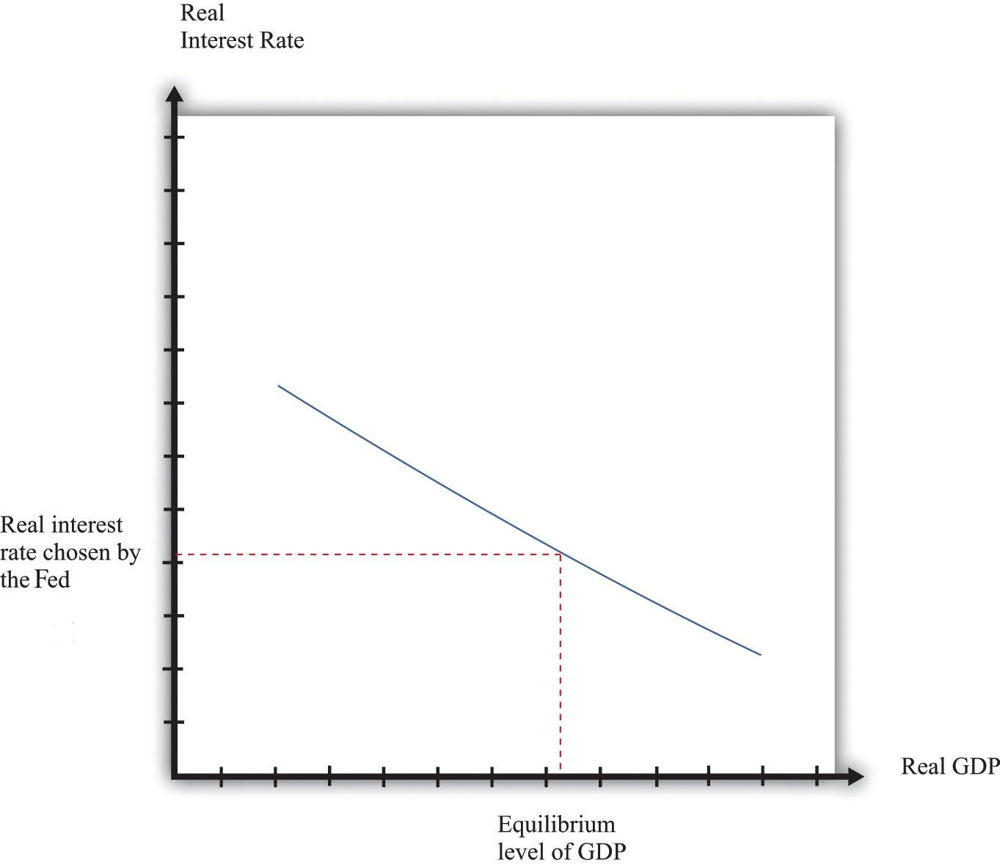This picture summarizes several steps in the monetary transmission mechanism to show the relationship between real interest rates and real GDP.
As the monetary authority changes the real interest rate, the economy moves along this curve. So, for example, a reduction in the real interest rate leads to increased spending on durables, which, through the multiplierThe amount by which a change in autonomous spending must be multiplied to give the change in output, equal to 1 divided by (1 – the marginal propensity to spend). process, increases aggregate output. The shape of the curve tells us something about the Fed’s ability to influence the economy. Suppose that (1) durable spending is very sensitive to the real interest rate and (2) the multiplier is large; then imagine that the Fed cuts interest rates. Firms and households both respond to this change. Firms decide to carry out more investment: they buy new machinery, open new plants, and so forth. Households, attracted by the low interest rates, borrow to buy new cars and new homes. As a result, durable spending increases substantially. Furthermore, this increase in spending leads to higher income and thus to further increases in spending by households. The end result is a large increase in real GDP. In this case, the curve is flat.
Figure 25.11 The Fed’s Influence on the Economy Depends on the Real Interest Rate–Real GDP Relationship
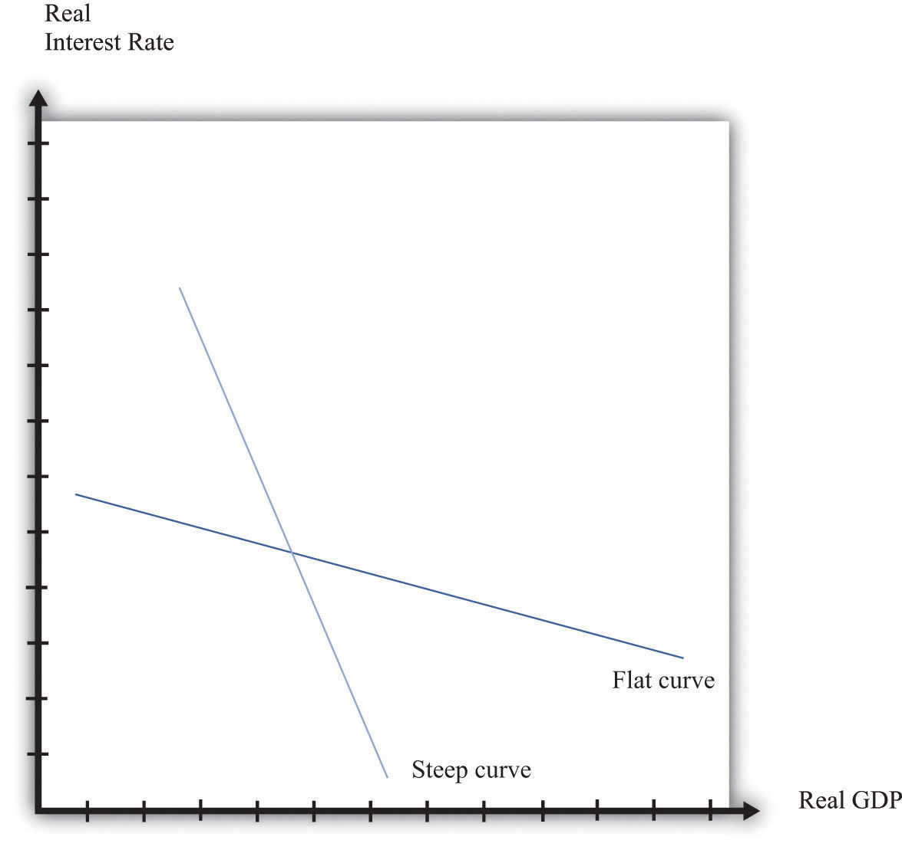When the curve is flat, the Fed is able to have a big influence on the economy. When the curve is steep, it is harder for the Fed to affect economic activity.
Figure 25.11 "The Fed’s Influence on the Economy Depends on the Real Interest Rate–Real GDP Relationship" shows both this case and the case where it is harder for the Fed to influence the economy. If spending on durable goods is not very responsive to changes in the real interest rate and the multiplier is small, then changes in interest rates end up having only a small effect on real GDP. In the diagram, this shows up as a steep curve. The Fed’s ability to use the monetary transmission mechanism to its advantage requires good knowledge of the shape of this relationship between interest rates and output.
After you have read this section, you should be able to answer the following questions:
We now understand the effect of an interest rate increase on output. According to the monetary transmission mechanism, we expect that this will result in lower spending and a lower real gross domestic product (GDP). Remember, though, that the Fed is also charged with worrying about prices and inflation. Look back at the Federal Open Market Committee (FOMC) announcement with which we opened the chapter. Much of that announcement concerns inflation, not output. It states that “inflation and longer-term inflation expectations remain well contained,” that “underlying inflation [is] expected to be relatively low,” and that “the Committee will respond to changes in economic prospects as needed to fulfill its obligation to maintain price stability.”Federal Open Market Committee, “Press Release,” Federal Reserve, February 2, 2005, accessed July 20, 2011, http://www.federalreserve.gov/boarddocs/press/monetary/2005/20050202/default.htm.
The statements by the Bank of England, the Central Bank of Egypt, and the Reserve Bank of Australia likewise betray a strong concern with inflation. The policy of many central banks is directed toward the inflation rate. This policy, appropriately called inflation targeting, focuses the attention of the monetary authority squarely on forecasting inflation and then controlling inflation through its current policy choices.
The inflation rateThe growth rate of the price index from one year to the next. is defined as the growth rate of the overall price levelA measure of average prices in the economy.. In turn, the price level in the economy is based on the prices of all the goods and services in an economy. From one month to the next, some prices increase, others decrease, and still others stay the same. The overall inflation rate depends on what is happening to prices on average. If most prices are increasing and few are decreasing, then we expect to see inflation.
A complete explanation of inflation requires an understanding of all the decisions made by managers throughout the economy as they decide whether to change the prices of the goods and services that they sell. Some managers might find themselves facing increasing costs and strong demand for their product, so they would choose to increase prices. Others might have decreasing costs and weak demand, so they would choose to decrease prices. The overall inflation rate depends on the aggregation of these decisions throughout the economy and is summarized in a price adjustment equation. The price adjustment equation is shown in Figure 25.12 "Price Adjustment".
Toolkit: Section 31.31 "Price Adjustment"
The net effect of all the price-setting decisions of firms yields a price adjustment equation, which is as follows:
inflation rate = autonomous inflation − inflation sensitivity × output gap.The price adjustment equation summarizes, at the level of the entire economy, all the decisions about prices that are made by managers throughout the economy. It tells us that there are two reasons for increasing prices. The first is that there may be underlying (autonomous) inflation in the economy, even when it is at potential output. This depends, among other things, on the inflation rate that firms anticipate. The second reason for increasing prices is if the output gap is negative. The output gap is the difference between potential output and actual output:
output gap = potential real GDP − actual real GDP.A positive gap means that the economy is in recession—below potential output. If the economy is in a boom, then the output gap is negative.
Figure 25.12 Price Adjustment

The price-adjustment equation tells us that when real GDP is below potential output, the output gap is positive, and the actual inflation rate is below its autonomous level. The opposite is true if real GDP is above potential output.
The output gap matters for inflation because as GDP increases relative to potential output, labor and other inputs become scarcer. Firms see increasing costs and increase their prices as a consequence. The second term of the price adjustment equation shows that when real GDP is above potential output (the output gap is negative), there is upward pressure on prices in the economy. The inflation rate exceeds autonomous inflation. By contrast, when real GDP is below potential output (the output gap is negative), there is downward pressure on prices. The inflation rate is below the autonomous inflation rate. The “inflation sensitivity” tells us how responsive the inflation rate is to the output gap.
If the output gap were the only factor affecting prices in the economy, then we would often expect to see deflationA sustained decrease in the price level.—decreasing prices. In particular, we would see deflation whenever the economy was in a recession. Although the United States and some other economies have occasionally experienced deflation, it is relatively rare. We can conclude that there must be factors other than the output gap that cause inflation to be positive.
Autonomous inflation is the inflation rate that prevails in the economy when the economy is at potential output (the output gap is zero). In the United States in recent decades, the inflation rate has been positive but low, meaning that prices have been increasing on average but at a relatively slow rate. Autonomous inflation is typically positive because most economies have some growth of the overall money supply in the long run. A positive output gap then translates not into deflation but simply into an inflation rate below the level of autonomous inflation. Thus in the FOMC statement with which we opened this chapter, the discussion is not about how contractionary policy will cause deflation; it is about how this policy will moderate the inflation rate. Positive autonomous inflation means that firms will typically anticipate that their suppliers or their competitors are likely to increase prices in the future. A natural response is to increase prices, so actual inflation is positive.
Figure 25.13 Interactions among Interest Rates, Output, and Inflation

The monetary transmission mechanism teaches us that an increase in real interest rates reduces spending and hence leads to a reduction in real GDP. In the (very) short run, the reduction in spending translates directly into a decrease in real GDP because prices are fixed. The reduction in GDP increases the output gap in the economy. Our price adjustment equation tells us in turn that this will tend to reduce the inflation rate in the economy.
Some firms will then adjust prices very quickly to the changing economic conditions. We do not think that the price level in the economy is literally fixed—unable to move—for any significant period of time. That said, some firms are likely to keep their prices unchanged for several months, even in the face of changing economic conditions. Thus the adjustment of prices in the economy takes some time. It will be months, perhaps years, before all firms have adjusted their prices.
In summary, an increase in interest rates leads to a gradual reduction in the inflation rate in the economy. Contractionary monetary policy leads to a reduction in economic activity and, over time, lower inflation. US monetary policy in the early 1980s provides a good illustration. At the start of that decade, the inflation rate was over 10 percent. To reduce inflation, the Fed, under Chairman Paul Volcker, conducted a contractionary monetary policy that sharply increased real interest rates. The immediate result was a severe recession, and the eventual result was a reduction in inflation, just as the model suggests.
We have now traced the effects of monetary policy from interest rates to spending to real GDP to inflation. The effects of monetary policy do not stop there. Instead, as inflation adjusts in response to monetary policy, there is a feedback to interest rates through monetary policy itself. This is shown in Figure 25.14 "Completing the Circle of Monetary Policy".
Figure 25.14 Completing the Circle of Monetary Policy

We close the monetary policy circle by observing that the Fed’s policies depend on the state of the economy.
Observers of the Fed’s behavior over the past 20 or so years have argued that the Fed generally follows a rule that makes its choice of a target interest rate somewhat predictable. The rule that summarizes the behavior of the Fed is sometimes called the Taylor ruleA rule for monetary policy in which the target real interest rate increases when inflation is too high and decreases when output is too low.; it is named after John Taylor, an economist who first characterized Fed behavior in this manner.Comments on John Taylor’s career and his contributions to monetary economics by Fed Chairman Ben Bernanke are available at “Opening remarks to the Conference on John Taylor’s Contributions to Monetary Theory and Policy, Federal Reserve Bank of Dallas, Dallas, Texas,” Federal Reserve, October 12, 2007, accessed September 20, 2011, http://www.federalreserve.gov/newsevents/speech/bernanke20071012a.htm. The Taylor rule stipulates a relationship between the target interest rate and the state of the economy, typically represented by both the inflation rate and some measure of economic activity (such as the gap between actual and potential GDP). Usually, we think that the monetary authority operates with a lag so that the interest rate the monetary authority sets at a point in time reflects the output gap and inflation from the recent past. According to the Taylor rule, the Fed will increase real interest rates when
Conversely, the Fed will decrease real interest rates when
The Fed will want to increase interest rates and thus “put the brakes on the economy” when inflation is high and when they think that real GDP is above its long-run level (potential output). The Fed will want to decrease interest rates when inflation is relatively low and the economy is in a recession.
An example of a Taylor rule is shown in Figure 25.15 "The Taylor Rule". The vertical axis is the real interest rate target of the Fed, and the horizontal axis is the inflation rate. As the inflation rate increases, the Fed, according to this rule, then increases the interest rate.
Figure 25.15 The Taylor Rule

The monetary policy rule shows how the Fed adjusts real interest rates in response to changes in inflation rates. As inflation increases, the monetary authority targets a higher real interest rate.
The different pieces of the Taylor rule can be in conflict. For example, the Fed may face a situation where inflation is relatively high, yet the economy is in recession. The precise specification of the rule then provides guidance as to how the Fed trades off its inflation and output goals. The rule is largely descriptive: it summarizes in a succinct manner the actions of the Fed. In doing so, it allows individuals to predict with some accuracy what actions the Fed is likely to take in the future.
The Taylor rule describes Fed policy in terms of the real interest rate. We know, however, that the Fed actually targets a nominal rate. This has a surprising implication when we examine how the Fed responds to inflation. Suppose the Fed is currently meeting its target inflation rate—say, 3 percent—and the federal funds rate is currently 5 percent. The real interest rate is therefore 2 percent (remember the Fisher equation). Now suppose the Fed sees that inflation has increased from 3 percent to 4 percent. The increase in the inflation rate has the effect of decreasing the real interest rate—again, this comes directly from the Fisher equation. The real interest rate is now only 1 percent. Yet the Taylor rule tells us that the Fed wants to increase the real interest rate. To do so, it must increase nominal interest rates by more than the increase in the inflation rate. In our example, the inflation rate increased by one percentage point, so the Fed will have to increase its target for the federal funds rate by more than one percentage point—perhaps to 6.5 percent.
The Taylor rule completes the circle of monetary policy. As indicated by Figure 25.14 "Completing the Circle of Monetary Policy", the monetary policy rule links the state of the economy, represented by the inflation rate and the output gap, to the interest rate. There is usually a lag in the response of the Fed to the state of the economy. So, for example, the decision made at the FOMC meeting in February 2005 reflected information on the state of the economy through the end of 2004, at best.
We now have the three pieces we need to understand the relationship between monetary policy, inflation, and real GDP:
Together, these three pieces paint a complete picture of the monetary policy process. The top left panel in Figure 25.16 "The Adjustment of Inflation over Time" is taken from Figure 25.15 "The Taylor Rule" and shows a positive relationship between inflation and the real interest rate. The top right panel in Figure 25.16 "The Adjustment of Inflation over Time" is taken from Figure 25.10 "The Relationship between the Real Interest Rate and Real GDP" and shows the relationship between real GDP and the interest rate. As shown in the figure, the higher the real interest rate, the lower real GDP is. As a reminder, higher real interest rates lead to lower aggregate spending. Finally, from the price-setting equation, changes in real GDP lead to changes in the inflation rate. We showed this previously in Figure 25.12 "Price Adjustment", and it appears in the bottom right panel of Figure 25.16 "The Adjustment of Inflation over Time". If real GDP decreases, the output gap increases, and the inflation rate decreases.
We can use Figure 25.16 "The Adjustment of Inflation over Time" to summarize the conduct of monetary policy. In this diagram, we see the Taylor rule in action: the Fed sees high inflation and so increases the real interest rate.
We have simplified the discussion here in two ways. First, we neglected the fact that the output gap also enters into the Taylor rule. The basic idea remains the same in that more complicated case. Second, we did not discuss autonomous inflation. Autonomous inflation, remember, captures managers’ expectations of future inflation and future demand conditions. It, too, will tend to change over time. Theories of autonomous inflation are a subject for more advanced courses in macroeconomics.
Figure 25.16 The Adjustment of Inflation over Time

Last period the economy was at point A, with high output and high inflation. Because inflation is too high, the Fed increases the real interest rate (top left). This reduces this period’s output (top right), which in turn leads to a reduction in the inflation rate (bottom right). The economy ends up at point B.
After you have read this section, you should be able to answer the following questions:
Monetary policy has international implications as well. Changes in interest rates lead to changes in supply and demand in the foreign exchange market.Chapter 24 "Money: A User’s Guide" explains this connection. In turn, changes in exchange rates affect exports and imports and influence the overall demand for goods and services. Among other things, this means that the monetary policy of other countries will have an effect on your own country. So if you live in Europe, you are not immune to Federal Open Market Committee (FOMC) actions. And if you live in the United States, you are not immune to the actions of the European Central Bank (ECB).
The key element in the monetary transmission mechanism is the ability of the central bank to influence the real interest rate. Changes in real interest rates lead to changes in spending on durable goods, which are a component of aggregate expenditures. But there is also another channel of influence. If the Fed cuts interest rates, for example, then the demand for dollars to invest in US asset markets will be reduced. This will reduce the foreign currency price of dollars. The weaker dollar means that goods produced in the United States are cheaper, so US exports will increase, and US imports will decrease. Thus changes in interest rates lead to changes in exchange rates, which in turn lead to changes in net exportsExports minus imports.. Net exports are also a component of aggregate expenditures. This is illustrated in Figure 25.17.
Figure 25.17
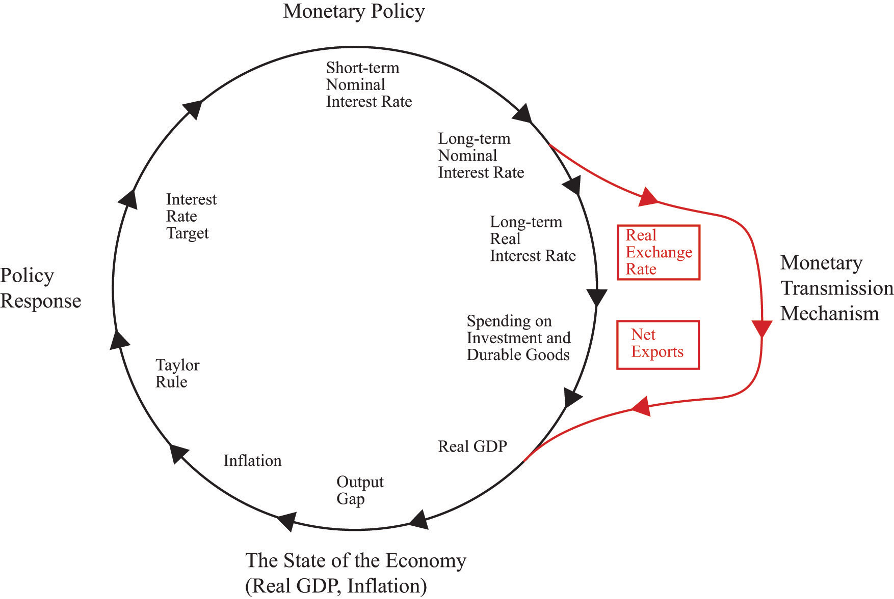There is an additional channel of the monetary transmission mechanism that operates through the exchange rate. Changes in interest rates lead to changes in exchange rates, which in turn lead to changes in net exports. This channel reinforces the effect operating through interest rates.
Even when we include this channel, it is just as easy to understand the monetary transmission mechanism as it was before. When interest rates are cut, there is an increase both in spending on durables and net exports. Both channels lead to higher aggregate spending and thus higher output.
Toolkit: Section 31.20 "Foreign Exchange Market"
You can review the workings of the foreign exchange market and the definition of the exchange rate in the toolkit.
The United States does not exist alone in the world economy. US financial markets are influenced by events in other countries, such as the actions of the ECB. Likewise, citizens in Europe are influenced by monetary policy in the United States.
Suppose the ECB cuts interest rates in Europe. As in the United States, the typical mechanism for this would be a purchase of debt issued by European governments. An increase in the price of this debt is equivalent to a decrease in interest rates. If nothing else happens, this decrease in European interest rates gives rise to an arbitrage opportunity. Investors want to move funds to the United States to take advantage of the higher interest rates. There is an increased demand for US assets and hence an increased demand for dollars. Interest rates in the United States decrease, which tends to increase durable goods spending and stimulate the US economy. Against that, the higher value of the dollar leads to fewer exports from the United States and more imports into the United States, so US net exports will decrease.
Completely analogously, monetary policy in the United States influences interest rates in other countries. If the Fed undertakes an open market sale of US government debt, for example, interest rates will increase in other countries as well as in the United States.
The US Federal Reserve and the ECB are big players in world financial markets. Their actions move world interest rates and world currency markets. There are other countries that are relatively small in the world economy. For example, suppose the Central Bank of Iceland increases interest rates in that country. The mechanisms that we have explained still apply: investors will find Icelandic assets more attractive, and there will be an increased demand for the Icelandic krona. However, the flows of capital into Iceland will be negligible in terms of the world economy. They will not have any noticeable effect on interest rates in Europe or the United States.
After you have read this section, you should be able to answer the following questions:
We have not yet said very much about exactly how the Fed changes interest rates. The Fed has three major tools at its disposal: open-market operations, the reserve requirement, and the discount rate. We discuss these in turn. Monetary policy operates through the Fed’s interactions with the banking system, so we first must make sure we understand what banks do in the economy.If your find this material interesting, a course on Money and Banking will delve much further into the details of how banks operate and how they interact with the monetary authority. Throughout this discussion, we use the credit market to think about how the Fed operates.
Toolkit: Section 31.24 "The Credit (Loan) Market (Macro)"
You can review the workings of the credit market in the toolkit.
Financial markets (that is, banks and other financial institutions) provide the link between savings and investment in the economy. A bank is a profit-making entity that takes in deposits from households and firms and makes loans to firms, households, and the government.
Banks can be fragile institutions.The fragility of banks is discussed in more detail in Chapter 22 "The Great Depression". They must ensure that their depositors are not worried that the bank might go out of business, taking their money with it. Banks do many things to ensure that their customers have confidence in them. Perhaps the most important is that they keep a certain amount of their assets in a very liquid form, such as cash. This means that if a depositor comes in to withdraw his or her money, the bank will be able to meet that demand. These liquid deposits are called the reservesDeposits received by a bank that it must set aside rather than loan to firms and households. of the bank.
Most banks in the United States are members of the Federal Reserve System. This membership comes with a responsibility to hold some fraction of deposits on reserve. This is called a reserve requirementThe level of reserves that the monetary authority requires a bank to hold..Current reserve requirements are at “Reserve Requirements,” Federal Reserve, accessed September 20, 2011, http://www.federalreserve.gov/monetarypolicy/reservereq.htm#table1. Reserve requirements limit the amount of deposits that banks are able to loan out to firms and households. Suppose a bank has $1,000 on deposit and the reserve requirement is 10 percent. Then the bank must hold at least $100 on reserve and can loan out at most $900. We say “at least $100” since the bank is free to hold more than 10 percent on reserve. In uncertain times, when a bank is unsure how many depositors are likely to want to withdraw their money, the bank may choose to keep reserves above and beyond the level required by the Fed.
What does a bank do if it finds itself with insufficient reserves on a given day to meet its reserve requirements? The answer is that it borrows—either from other banks or from the Federal Reserve itself. Because the Federal Reserve can influence the interest rates at which banks borrow, it can influence the behavior of banks.
In the memo with which we opened the chapter, the Federal Open Market Committee (FOMC) decided to increase the target federal funds rate to 2.5 percent. But what exactly does this mean, and how did the Fed accomplish it? The federal funds rate is the interest rate in a particular market—the market where banks make overnight loans to each other. Overnight loans, as the name suggests, are assets that have a very short time to maturity (one day). The interest rate on these loans is therefore one of the “shortest” interest rates in the economy, which is why it is targeted by the Fed. The interest rate is so named because the loans are made using the funds that banks have available in their accounts at the Federal Reserve.
The Federal Reserve does not participate directly in this market. It influences the federal funds rate by buying and selling in a different market—the market for short-term government debt. These purchases and sales are called open-market operationsPurchases and sales of government debt by a central bank..Section 14 of the Federal Reserve Act describes open-market operations. Let us examine how this works. The effect of open-market operations can be seen in the market for government debt. Part (a) of Figure 25.18 "The Market for Government Bonds" shows the supply and demand of this asset. The horizontal axis shows the quantity of assets (think of this as the amount traded on a given day), and the vertical axis shows the price of those assets. The participants in this market are financial institutions and others who hold, or want to hold, bonds as part of their portfolio of assets. Current owners will be willing to sell bonds if their price is sufficiently high. Conversely, if the price of bonds decreases, more people will want to purchase them. The same institution could be either a supplier or a demander, depending on the price. It is perfectly possible that a financial institution would want to buy bonds if their price were low and sell them if their price were high.
Figure 25.18 The Market for Government Bonds
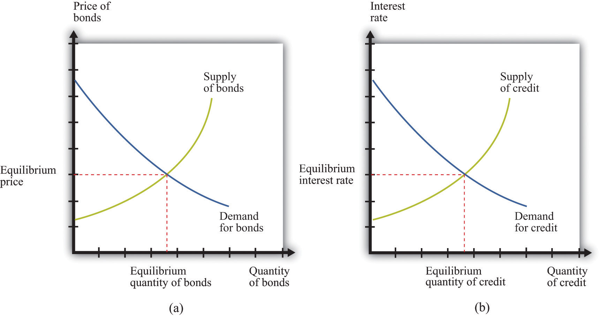(a) The price of bonds is determined by supply and demand. (b) These same transactions are represented in a credit market, which is another way of looking at exactly the same market.
Part (b) of Figure 25.18 "The Market for Government Bonds" shows the equivalent representation of this as a credit market. When the Fed buys bonds, it is making a loan. When the government or private investors sell bonds to the Fed, they are borrowing from the Fed. The crossing of the supply and demand curves tells us the equilibrium price of government bonds. It also tells us how many bonds changed hands that day, but our interest here is in what is happening to prices.
Now suppose the Federal Reserve steps into this market and buys some government bonds. This increases the demand for bonds, so the price of bonds will increase. This is shown in part (a) of Figure 25.19 "Intervention by the Federal Reserve". Part (b) of Figure 25.19 "Intervention by the Federal Reserve" shows the same action viewed through the lens of a credit market. Conversely, if the Fed decides to sell some of its stock of government bonds, the supply of bonds will shift out, and the price of bonds will decrease (see Figure 25.20 "Intervention by the Federal Reserve").
Figure 25.19 Intervention by the Federal Reserve
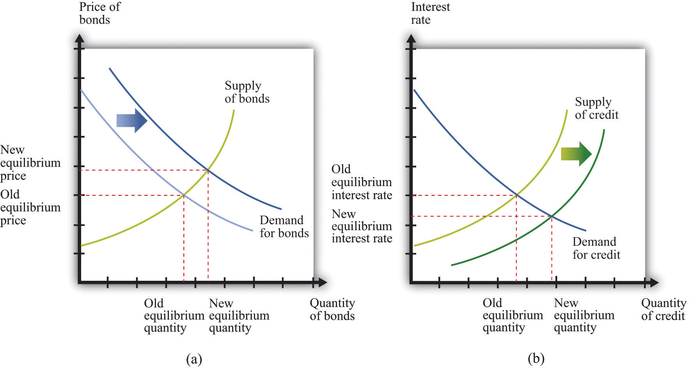When the Federal Reserve conducts an expansionary open-market operation, it purchases bonds (a) or, equivalently, supplies more credit (b). The price of bonds increases, or, equivalently, the interest rate decreases.
Figure 25.20 Intervention by the Federal Reserve
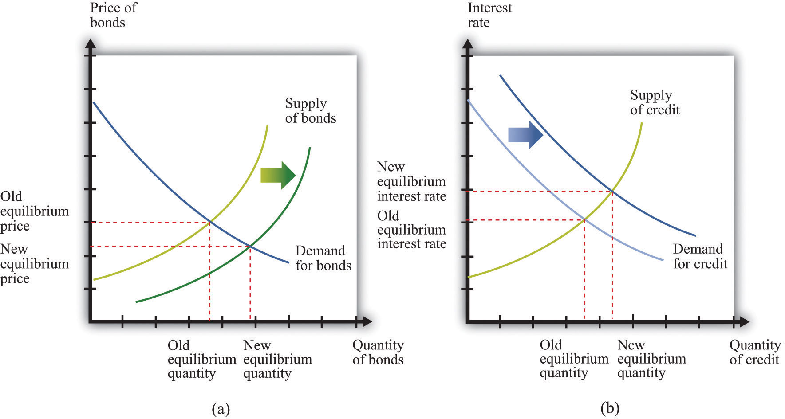When the Federal Reserve conducts a contractionary open-market operation, it sells bonds (a) or, equivalently, demands more credit (b). The price of bonds decreases, or, equivalently, the interest rate increases.
Thus the Federal Reserve, by buying or selling government bonds in this market, has the ability to influence the price of bonds. This means that it can affect the interest rate on those bonds.
From this relationship, we know the following:
The Fed’s actions in this market have an effect on interest rates in other markets, as banks and other financial institutions adjust their portfolios in response to the changing interest rate on government bonds. The Fed calibrates its buying and selling to try to achieve its target interest rate in the federal funds market.
The February 2005 announcement by the FOMC also included an increase in the discount rate. The discount rate is the interest rate from another market—in this case a market established by the Fed itself.
We have said that if a bank is short on reserves, it can borrow. One source of loans is the federal funds market. Another source of loans is the Fed itself. Member banks have the privilege of borrowing from the Fed, and the rate at which a bank can borrow is called the discount rateThe interest rate paid by banks on loans from the Fed.. The Fed directly controls this interest rate. The Federal Reserve’s policies on such loans are set out in “Regulation A” of the Fed’s Board of Governors: “A Federal Reserve Bank [that is, a Regional Fed] may extend primary credit on a very short-term basis, usually overnight, as a backup source of funding to a depository institution that is in generally sound financial condition in the judgment of the Reserve Bank. Such primary credit ordinarily is extended with minimal administrative burden on the borrower.”“Regulation A (12 C.F.R. 201 as amended effective December 9, 2009),” Federal Reserve, accessed July 20, 2011, http://www.frbdiscountwindow.org/regulationa.cfm?hdrID=14&dtlID=77. Once a bank has established the right to borrow at the Fed’s “discount window,” the execution of such a loan is straightforward. The bank simply makes a toll-free call and provides a few pieces of basic information.
To see how this tool works, suppose the discount rate were very high, much higher than the interest the bank can earn by making a loan. Then the bank would find it prohibitively expensive to borrow from the Fed. If the bank were unsure that it could meet the needs of depositors, it would respond by holding reserves in excess of the reserve requirement. That is, with a very high discount rate, the bank would lend out a smaller fraction of its deposits. By contrast, if the Fed were to set the discount rate very low, the bank would make more loans and hold fewer reserves, safe in the knowledge that it could always borrow from the Fed if necessary.
From this reasoning, we can see that as the discount rate is increased, banks hold more excess reserves and lend less. This shows up in Figure 25.21 "An Increase in the Discount Rate" as a shift inward in the supply of credit. Thus the Fed can increase interest rates by increasing the discount rate.
Figure 25.21 An Increase in the Discount Rate
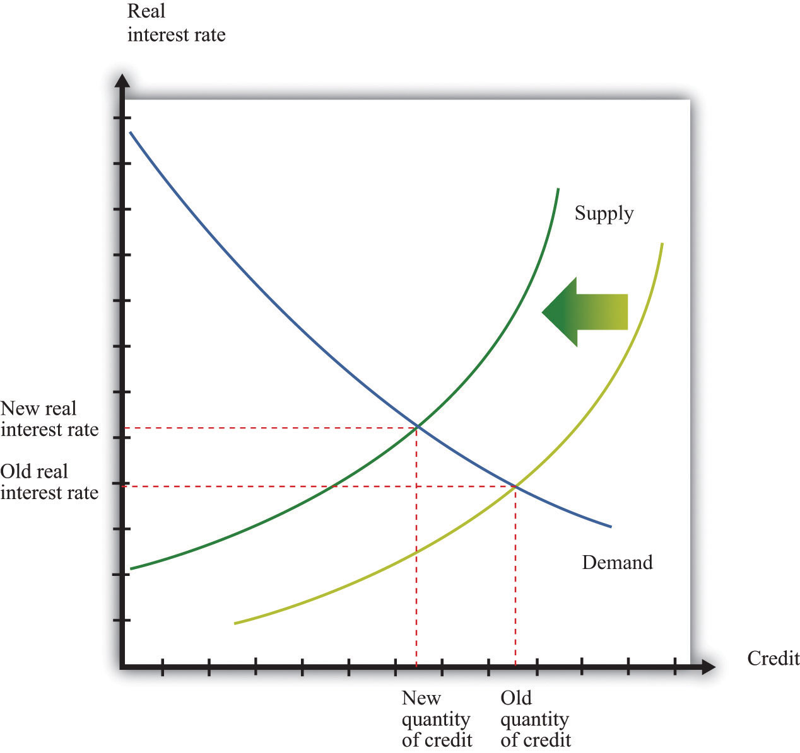An increase in the discount rate reduces the supply of credit and therefore increases the real interest rate.
Reserve requirements are outlined in Section 19 (A) of the Federal Reserve Act:
(A) Each depository institution shall maintain reserves against its transaction accounts as the Board may prescribe by regulation solely for the purpose of implementing monetary policy—
Suppose the Fed were to increase the reserve requirement from 10 percent to 20 percent. In the previous example, all else being the same, a bank with deposits of $1,000 would be required to have at least $200 on deposit, rather than the $100 that was required originally. To fulfill this larger reserve requirement, the bank would be allowed to lend only $800 at most. Banks therefore respond to an increase in the reserve requirement by holding a larger fraction of deposits on reserve and lending out a smaller fraction of their deposits. This reduces the supply of credit in the economy since a smaller fraction of saving is actually being lent.
As shown in Figure 25.22 "An Increase in Reserve Requirements", the supply of credit shifts inward, and the interest rate increases. This picture is exactly the same as Figure 25.21 "An Increase in the Discount Rate". When we think about the credit market, the increase in the discount rate and the increase in the reserve requirement have the same effect. Thus we learn that the Fed can increase interest rates by increasing the reserve requirement. Often, increases in the reserve requirement are coupled with other measures, such as open-market operations, to increase interest rates. A decrease in the reserve requirement works in a symmetric fashion, though in the opposite direction.
Figure 25.22 An Increase in Reserve Requirements
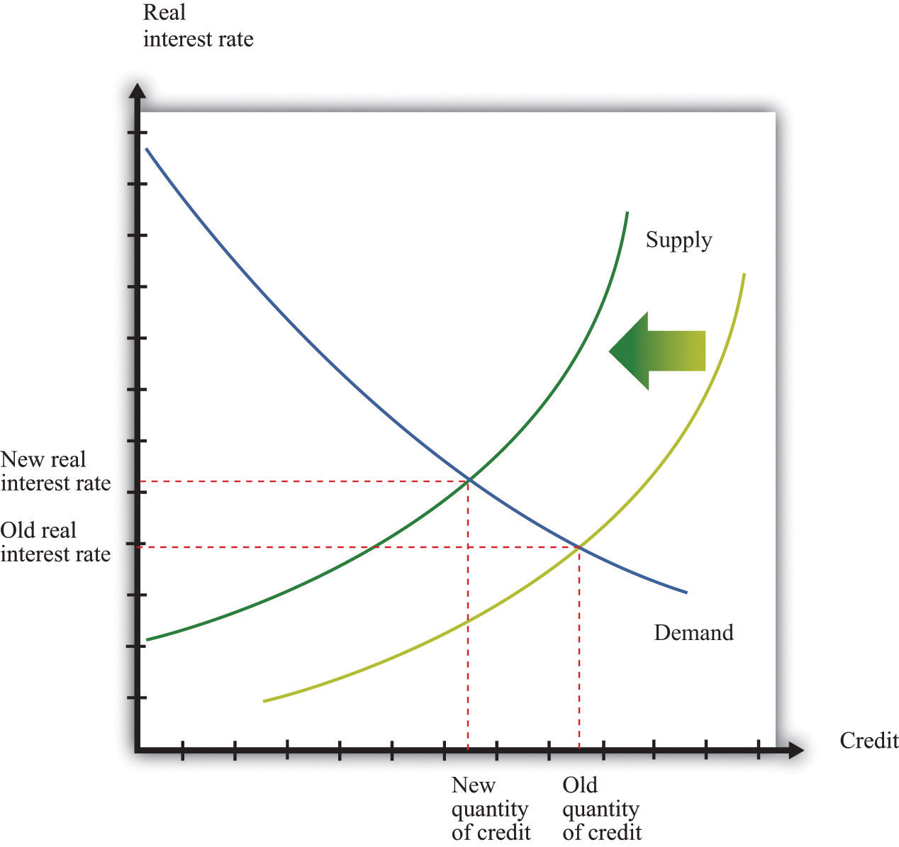An increase in reserve requirements reduces the supply of credit and therefore increases the real interest rate.
After you have read this section, you should be able to answer the following questions:
We finish this chapter by going back to the actual actions of the Fed and focusing on two periods. First, we consider the Great Depression from a monetary perspective.Chapter 22 "The Great Depression" discusses that period in more detail and pays more attention to fiscal policy. Then we consider the period leading up to the February 2005 announcement.
The Fed was in fact not very active during the Great Depression (some commentators might even say that this section should be titled “The Fed Inaction”). Yet monetary events were still critical.
A key short-term interest rate at that time was the so-called commercial paper rate. This rate decreased from about 6 percent in 1929 to a low of 0.8 percent by 1935. At first glance, therefore, it seems as if the monetary authority was implementing cuts in interest rates that could stimulate the economy. On closer examination, however, the picture is not so simple. During the Great Depression the inflation rate was negative—prices were decreasing on average. From the Fisher equation, a negative inflation rate means that the nominal interest rate understates the cost of borrowing. Decreasing prices mean that the nominal interest rate is smaller than the real interest rate. Even though nominal interest rates were decreasing in the early 1930s, the inflation rate was decreasing faster. As a result, the real interest rate increased. It became more expensive for households and firms to borrow, so spending decreased.
When prices decrease, the obligations of borrowers increase in real terms. People at the time did not typically anticipate these decreasing prices, so there was unanticipated deflation. Unanticipated deflation redistributes wealth from borrowers to lenders. Many firms, banks, and households were left with large (real) debts during the Great Depression. These led to bankruptcies and contributed to the contraction in economic activity.
Thus along with the high real interest rates came a series of bank failures. In addition, banks tended to hold more in excess reserves during this period, and thus loans, relative to deposits, decreased. These banking problems meant that the financial markets became less effective at connecting the savings of individual households with the investment plans of firms. It is perhaps not surprising that investment and spending on consumer durable goods decreased so much during the Great Depression.
In retrospect, the monetary authority could have been much more aggressive in dealing with the high real interest rates. They could have conducted open-market operations, buying bonds and decreasing interest rates. At the same time, this would have provided additional funds (sometimes called liquidity) to the banking system. Yet the Fed did not do so. Many observers now think that the severity of the Depression can be blamed in large part on these failures of the Fed. If so, this is good news, for it tells us that we are much more likely to be able to avert similar economic catastrophes in the future.
Here is a brief summary of the target federal funds rate over the period from June 1999 to May 2005. Remember that these are nominal interest rates.
We have already examined these targets, together with the actual federal funds rates, in Figure 25.3 "Target and Actual Federal Funds Rate, 1971–2005".
The time of tighter monetary policy, from June 1999 to January 2001, was a period of inflation concern. In the first part of 1999, the inflation rate averaged about 2 percent, and the unemployment rate was decreasing, reaching 4 percent in May 1999. Even though inflation was low, the Federal Open Market Committee (FOMC) statement from June 1999 called for an increase in the target federal funds rate, pointing to potential inflation as a rationale for increasing the target rate: “The Committee, nonetheless, recognizes that in the current dynamic environment it must be especially alert to the emergence, or potential emergence, of inflationary forces that could undermine economic growth.”Federal Open Market Committee, “Press Release,” Federal Reserve, June 30, 1999, accessed August 8, 2011, http://www.federalreserve.gov/boarddocs/press/general/1999/19990630/default.htm. The Fed’s tightening had the effect of reducing durable spending and thus bringing gross domestic product (GDP) down closer to potential output. As a consequence, there was less pressure on prices.
This policy continued through January 2001. By that point, the United States was very close to recession. (According to the National Bureau of Economic Research Business Cycle dating group, a recession began in March 2001.) From December 2000 to January 2001, the unemployment rate jumped from 3.7 percent to 4.7 percent. The Fed responded by allowing the federal funds rate to decrease steadily, starting in February 2001. This policy led to a federal funds rate of 1 percent by July 2003, a level that was maintained for a year. Historically, this was a very low rate. Over the year, inflation averaged about 2.3 percent, so the real federal funds rate was actually negative.
A turnaround in Fed policy occurred in August 2004. Inflation had started to increase somewhat in early 2004, and the unemployment rate had decreased to 5.3 percent in May 2004. So in August 2004, the Fed started a gradual increase of the target federal funds rate. Look back at Figure 25.4 "Short-Term and Long-Term Interest Rates". Recall that part of the monetary transmission mechanism is the link between the nominal federal funds rate, which is very short term, and much longer-term rates. Figure 25.4 "Short-Term and Long-Term Interest Rates" shows the federal funds rate along with the 1-year and 10-year Treasury bond yields. The loosening of monetary policy in February 2001 is evident from the decrease in the federal funds rate and the 1-year Treasury rate.
But the long-term Treasury rate seems not to follow the short-term rates that closely. In fact, it seems that the long-term rates started to decrease before the reductions in the federal funds rate began, and then the long-term rates did not decrease nearly as much over the February 2001–August 2004 period. After that time, although the federal funds rate was increased, the long-term rate did not respond much at all.
This reminds us of one the biggest challenges of monetary policy. Although the Fed is able to closely target the federal funds rate, it has much less ability to control longer-term rates. Someone making a loan for a long period of time will try to anticipate economic events over the course of the entire loan period. As a consequence, the loan rate may reflect anticipated events (such as the Fed’s loosening of monetary policy in February 2001) and may also not respond as much to rate changes that are seen as temporary.
We have made monetary policy look easy. The effects of the actions of the monetary authority are summarized by Figure 25.2 "The Monetary Transmission Mechanism". Given a choice of a target inflation rate and a target level of economic activity, the Fed (and other central banks) ought to know exactly what to do to reach these goals. So why are central bankers so vital to the functioning of the macroeconomy?
In Section 25.3.3 "Closing the Circle: From Inflation to Interest Rates", we described the Taylor rule as relating the target federal funds rate to the state of the economy, specifically the inflation rate and the output gap. As a matter of theory, this is straightforward to describe. The practice is rather harder.
First, it is a significant challenge simply to know the current state of the economy. In the United States, part of the preparation for FOMC meetings is an attempt to figure out the current output gap and other variables. The Board of Governors of the Federal Reserve has a large staff of professional economists, as do the various regional Federal Reserve banks. These economists spend much of their time helping the members of the FOMC understand the current state of the economy.
One particular problem is that the level of real GDP itself is calculated only on a quarterly basis. Potential GDP, meanwhile, is a theoretical construct that requires some guesses about “full employment.” It is not directly measured. So if the Fed learns that real GDP is growing rapidly, it has to judge whether this is because potential GDP is growing rapidly or because actual GDP is above potential.
Since the Fed does not meet to determine policy each day and the Fed’s policies themselves take time to work through the economy, it is not even enough to know the current state of the economy. The FOMC must also forecast the state of the economy for the near future. One talent of the previous Fed chairman, Alan Greenspan, was apparently his use of relatively unorthodox sources to get a sense of the state of the economy.
Even if there were no uncertainty about the current state of the economy—that is, the inflation rate and the output gap—monetary policy is still difficult for other reasons. First, as we emphasized earlier, the Fed does not have direct control over the long-term real interest rates that matter for durable goods spending. The Fed can influence a short-term nominal rate, which in turn influences the long-term real rates. But the exact link from one interest rate to the other is not known by the Fed and may change over time. The Fed may fail to achieve the long-term rate that it is aiming for.
Second, the Fed does not have perfect knowledge of the monetary transmission mechanism. Consider again the links between real interest rates and output, as shown in Figure 25.10 "The Relationship between the Real Interest Rate and Real GDP". In reality, the Fed does not know exactly what the relationship between interest rates and output looks like. Reality looks more like Figure 25.23 "Controlling the Economy". In this picture the Fed is aiming for a high level of output. However, it misses its target real interest rate and actually ends up setting a higher real rate than it wanted. In addition, real GDP is more sensitive to interest rates than it thought, so the high rate leads to a big reduction in GDP. Thus because the Fed fails to achieve its target interest rate and also misjudges the monetary transmission mechanism, it ends up with much lower real GDP than it wanted.
Finally, the Fed has imperfect knowledge of the link between economy activity and price adjustment. Recall that the price setting equation stipulates that inflation depends on the output gap and something called autonomous inflation. As we have seen, this last term captures several factors, including the influence of expectations about the future on current price-setting behavior. This presents a double challenge to the Fed. First, to evaluate the effects of its policy on prices, the Fed needs to know the expectations that underlie autonomous inflation. Second, the Fed must recognize that its actions and statements influence these expectations. This is why the individuals involved in the making of monetary policy are so careful both about what they do and about what they say about what they do.
Figure 25.23 Controlling the Economy

The Fed’s ability to control the economy depends on how knowledgeable it is about the state of the economy and on how accurately it can target interest rates.
We know that the goals of the Fed include price and output stability. Sometimes these goals conflict, and when they do, the task of central bankers becomes even more complicated.
The FOMC statement with which we opened this chapter stated that the “Committee perceives the upside and downside risks to the attainment of both sustainable growth and price stability for the next few quarters to be roughly equal.” But what if instead it had said the “Committee perceives the risks of low output growth and high inflation for the next few quarters to be roughly equal”? What would the appropriate monetary policy be in this case? Should the Fed use its power to stabilize prices or to promote economic activity?
The tension is evident from the Taylor rule. Here is an example: the target real interest rate increases when inflation is high and decreases when the output gap is high:
real interest rate = −(1/2) × (output gap) + (1/2) × (inflation rate − 4 percent).Remember that a positive output gap means that that the economy is in a recession: actual GDP is below potential. When the economy is in recession and inflation is not very high, the Taylor rule says that the Fed should reduce the real interest rate. And—from this same rule—the Fed should increase the real interest rate in the face of high inflation and a negative output gap. But what should the Fed do when inflation is high and there is a recession? High inflation argues for increasing real interest rates, but a positive output gap argues for a cut in rates.
The Fed—and, indeed, monetary authorities throughout the world—faced exactly this conflict in the mid-1970s when oil prices increased substantially as a result of actions by the Organization of Petroleum Exporting Countries. Researchers who have examined data over the past three decades have found that an increase in oil prices is typically met with an increase in the federal funds rate.The following discussion elaborates on the Fed’s response to oil price increases: Federal Reserve Bank of Cleveland, accessed July 20, 2011, http://www.clevelandfed.org/Research/inflation/Readingroom/Viewpoint/2005/oil-prices-economy04-05.cfm. A speech by then Fed Governor Ben Bernanke in 2004 provides more details: “Remarks by Governor Ben S. Bernanke at the Distinguished Lecture Series, Darton College, Albany, Georgia,” Federal Reserve, October 21, 2004, accessed July 20, 2011, http://www.federalreserve.gov/boardDocs/speeches/2004/20041021/default.htm. Thus, when faced with conflicting goals stemming from an oil price increase, the Fed seems to have put more weight on the goal of price stability.
Everything that we have talked about in this section helps to explain why central bankers must be skilled and knowledgeable individuals with a good grasp of both economics and the workings of financial markets. Still, we have essentially been describing the job of a technocrat. Central bankers really earn their salaries in abnormal rather than normal times.
Starting in 2007 and stretching well into 2008, the United States and other countries began to experience financial crises that were similar in some ways to those experienced in the Great Depression.The financial crisis of 2008 is discussed in Chapter 19 "The Interconnected Economy" and Chapter 30 "The Global Financial Crisis". The crisis seemed to begin innocently enough, with a decrease in housing prices that left some people unable or unwilling to cover their mortgage payments. But because of the way financial markets work, it became very hard for lenders to work out which of their assets were “nonperforming”—that is, unlikely to be repaid. As a result, financial markets froze up.
Part of the Fed’s response was an aggressive use of the tools that we have described in this chapter. For example, the Fed reduced the federal funds rate down to 0.25 percent. At that point, the Fed had just about reached the limit of what was possible with monetary stimulus. The problem is that nominal interest rates cannot go below zero because cash has a nominal interest rate of zero. If you keep a dollar bill from this year to next year, it is worth $1 next year. Therefore it would always be better just to keep cash rather than invest in an asset with a negative nominal return. The Fed had hit what is known as the zero lower boundThe fact that the Fed cannot push nominal interest rates below zero..
Even though it was at the zero lower bound, the Fed still had other options. In normal circumstances, it operates in the economy by buying and selling short-term government debt, one of the many assets in the economy. But these were highly abnormal circumstances, and it is possible for the Fed to buy and sell other assets as well. This is what the Fed did. During the crisis, the Fed started purchasing many other assets, such as commercial paper. In other words, instead of just lending to banks, the Fed started lending directly to firms in the economy. Central banks in some other countries, such as the United Kingdom, pursued similar policies.Explaining what happened in 2008 involves understanding the actions of the Fed, but it requires many of our other tools as well. For that reason, we take up this crisis in more detail in Chapter 30 "The Global Financial Crisis".
A driving analogy is sometimes used to illustrate the problems of the Fed. In the best of all worlds, we would drive a car in perfect weather along straight, wide, dry roads. We would look out crystal clear windows with complete knowledge of exactly where we are on the road and what driving conditions are like up ahead. Then, with complete control over the car, we could adjust speed and direction to reach our destination.
This is not the right picture for monetary policy. Instead, the windshield is very dirty, obscuring current conditions and making predictions almost impossible. Although the driver is well trained, the connection between the tools of the car and its direction and speed is haphazard.
Suppose the driver sees a steep downhill in the distance that requires some slowing down. Putting on the brakes will eventually slow the car down, but the delay is hard to predict. Making matters worse, by the time the car slows, the road may be going uphill again.
More precisely, the first challenge for the Fed is determining the current state of the economy. The Fed must rely on economic data to determine the current state of the economy. This is not easy; data often arrive with lags and with measurement error. Furthermore, the data often provide conflicting signals about the current state of the economy.
The second challenge for the Fed is that the transmission mechanism is not cast in stone. Reducing real interest rates by, say, one percentage point does not create the same response in spending at all times. Instead, the links in the monetary transmission mechanism change over time and depend on numerous other variables in the economy. Understanding these links remains a key area of research in economics and is also a challenge for those responsible for the conduct of monetary policy.
History of money
Consider a Taylor rule given by
real interest rate = −(1/2) × (output gap) + (1/2) × (inflation rate − 4 percent).Economics Detective
Get data on the US economy to see how well the Taylor rule,
real interest rate = −(1/2) × (output gap) + (1/2) × (inflation rate − 4 percent),fits the facts for the past five years.